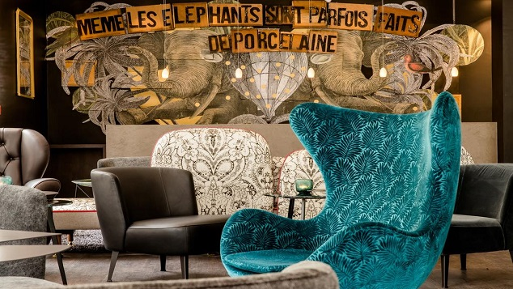
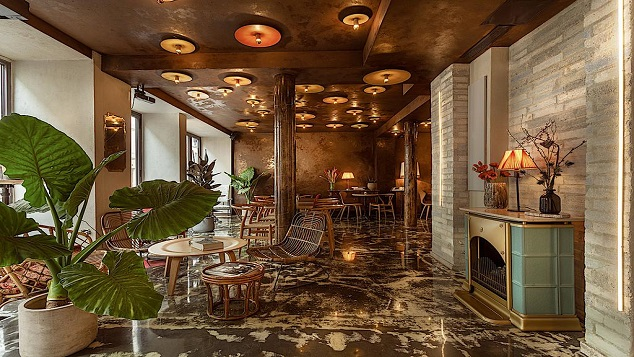
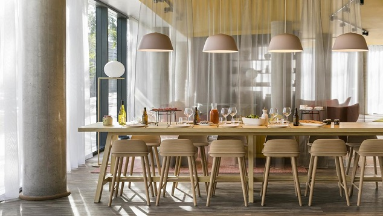
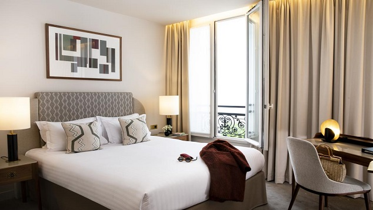
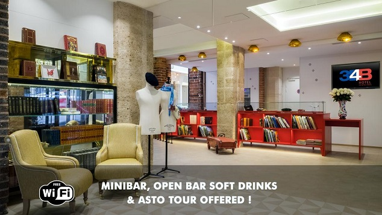

Paris

Paris is especially known for its museums and architectural landmarks:
the Louvre was the most visited art museum in the world in 2018, with 10.2 million visitors.
The Musée d'Orsay and Musée de l'Orangerie are noted for their collections of French Impressionist art,
and the Pompidou Centre Musée National d'Art Moderne has the largest collection of modern and contemporary art in Europe.
The historical district along the Seine in the city centre is classified as a UNESCO Heritage Site.
Popular landmarks in the centre of the city include the Cathedral of Notre Dame de Paris and the Gothic royal chapel of Sainte-Chapelle,
both on the Île de la Cité; the Eiffel Tower, constructed for the Paris Universal Exposition of 1889; the Grand Palais and Petit Palais,
built for the Paris Universal Exposition of 1900; the Arc de Triomphe on the Champs-Élysées,
and the Basilica of Sacré-Coeur on the hill of Montmartre. Paris received 23 million visitors in 2017,
measured by hotel stays, with the largest numbers of foreign visitors coming from the United States,
the United Kingdom, Germany and China. It was ranked as the third most visited travel destination in the world in 2017,
after Bangkok and London. The football club Paris Saint-Germain and the rugby union club Stade Français are based in Paris.
The 80,000-seat Stade de France, built for the 1998 FIFA World Cup,
is located just north of Paris in the neighbouring commune of Saint-Denis.
Paris hosts the annual French Open Grand Slam tennis tournament on the red clay of Roland Garros.
Paris hosted the Olympic Games in 1900, 1924 and will host the 2024 Summer Olympics. The 1938 and 1998 FIFA World Cups,
the 2007 Rugby World Cup, and the 1960, 1984 and 2016 UEFA European Championships were also held in the city and, every July,
the Tour de France bicycle race finishes there.
The centre of Paris contains the most visited monuments in the city, including the Notre Dame Cathedral and the Louvre as well as the Sainte-Chapelle; Les Invalides, where the tomb of Napoleon is located, and the Eiffel Tower are located on the Left Bank south-west of the centre. The Panthéon and the Catacombs of Paris are also located on the Left Bank of the Seine. The banks of the Seine from the Pont de Sully to the Pont d'Iéna have been listed as a UNESCO World Heritage Site since 1991. The Axe historique, pictured here from Concorde to Grande Arche of La Défense Hôtel national des Invalides Other landmarks are laid out east to west along the historical axis of Paris, which runs from the Louvre through the Tuileries Garden, the Luxor Column in the Place de la Concorde, and the Arc de Triomphe, to the Grande Arche of La Défense.
Several other much-visited landmarks are located in the suburbs of the city; the Basilica of St Denis, in Seine-Saint-Denis, is the birthplace of the Gothic style of architecture and the royal necropolis of French kings and queens. The Paris region hosts three other UNESCO Heritage sites: the Palace of Versailles in the west, the Palace of Fontainebleau in the south,[211] and the medieval fairs site of Provins in the east. In the Paris region, Disneyland Paris, in Marne-la-Vallée, 32 kilometres (20 miles) east of the centre of Paris, received 9.66 million visitors in 2017.
5 of the best hotels in Paris
(WORLD TELESCOPE) — In Paris, you're never stuck for something to do, see, eat or drink--
no matter what time of the night or day it is.
But even the most energetic travelers need somewhere to take a breather.
In a destination packed with more hotels than you could visit in a lifetime, finding the best isn't easy.
But these five are among the best the city has to offer when you stay here:
1. Motel One Paris-Porte Dorée

Located in the 12th district of Paris,
Motel One Paris-Porte Dorée provides a garden and an on-site bar.
1. There was more space that I expected - enough for yoga and foamrolling.
This is really a surprising luxury for rooms in Paris
2. Giant bed with many pillows
3. The rooms and the rest of the hotel is perfectly clean,
spacious, new and beautifully designed.
Very cosy 4. Loved the shower and the eco-friendly soap
5. The staff is friendly and professional
6. The breakfast is wow. Everything I tasted was great.
I get up late, so I was sad that the organic eggs were finished
a couple of times (keep in mind)
7. The hotel is super quiet, which is very important to me.
Absolute silence at night 8. I was worried about the location,
but it is really not a problem. There is a subway, tram and buses.
Also I found the area one of the most beautiful and worthy of visit in Paris,
with a beautiful park, lake, botanical and zoological gardens,
amazing Chateau de Vincennes... There was no line to enter.
I could walk the castle and be alone there.
It is a very different experience from sharing the walk
with a dozen or more of people
(this is what usually happens in popular places in Paris).
There is a museum, cafes and restaurants next to the hotel.
It is a quiet area, almost devoid of tourists and noise - I loved it 9.
I didn’t have the chance to chill in the lounge,
but I saw people enjoying it and the bar.
Looked very appealing I recommend it to people
who are less into tasting the discomforts of Paris rooms
and enjoying the noise while sleeping.
It is a great hotel to get away, rest and then go back,
or enjoy less crowded area of Paris.
Loved it and would love to stay there again. .
2. Hôtel La Nouvelle République

Located in the 11th arrondissement of Paris,
Hôtel La Nouvelle République is a 15-minute walk from
Place de la République and a 20-minute walk from the Marais district.
great breakfast, nice neighborhood, friendly staff
3. Okko Hotels Paris Porte De Versailles

Okko Hotels Paris Porte De Versailles is located 700 metres
from Paris Expo - Porte de Versailles Exhibition Centre and 2.8 km
from Parc des Princes It offers air-conditioned accommodation with free...
Loved my 7nights here, 5mins to railway, loved the club, staff were extremely helpful
4. Le Tsuba Hotel

Le Tsuba Hotel is located in Paris's 17th arrondissement,
just a 2-minute walk from the Arc de Triomphe and the Champs Elysées Avenue.
It boasts a fitness centre and a sauna.
The location is very good with friendly service!
5. Hotel 34B - Astotel

Hotel 34B - Astotel is situated in Paris,
1 km from Opéra Garnier and 1.5 km from Louvre Museum.
Free WiFi access is provided throughout. Good location,
good breakfast, OK room size, OK bathroom size,
safe neighbourhood and good value for money.